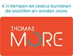

campus De Nayer
campus De Nayer
Thomasmore Mechelen, Antwerpen en De Kempen werken vanaf academiejaar 2013 - 2014 samen als 1 hogelschool
Thomasmore Mechelen biedt 15 praktijkgerichte professionele bacheloropleidingen van drie jaar aan (waarvan sommige bachelors ook in avond- en weekendonderwijs), 4 academische bachelors en 7 masters.
Daarnaast organiseert de hogeschool een hele reeks vervolgopleidingen: bachelors na bachelor, postgraduaten en navormingen en een master na master.
Verder is de hogeschool actief in toegepast wetenschappelijk onderzoek en consultancy.

Thomasmore is lid van de Associatie K.U.Leuven